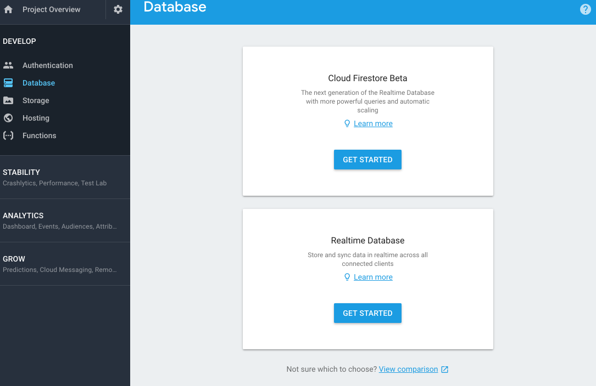
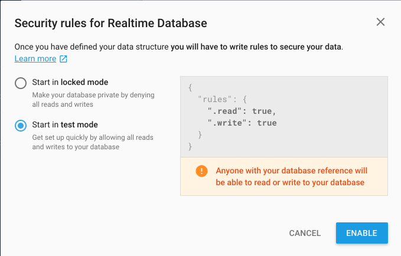
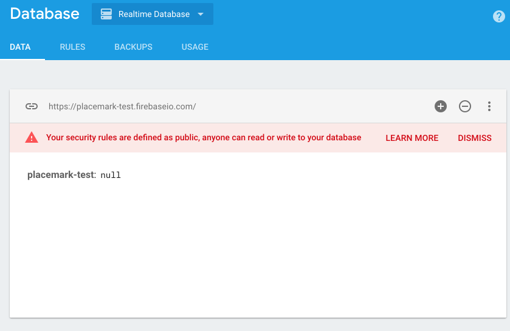
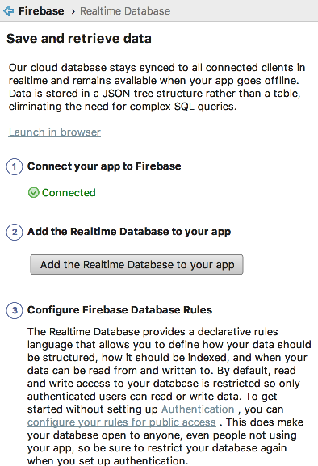
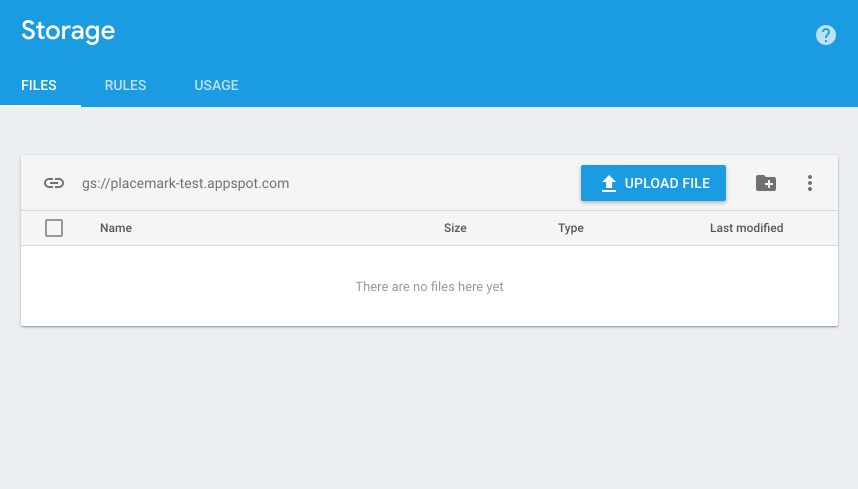

Objectives
Store placemarks in Firebase Realtime Database + images in Firebase Storage
Solutions
Exercise 1
Adjust the title of the PlacemarkListActivity - such that it displays the logged in users email:

The logged in user details are reasonably easy to locate:
Here is how we could access this in kotlin:
val user = FirebaseAuth.getInstance().currentUser
var appTitle = "${title.toString()}: ${user!!.email}"Solution
PlacemarkListActivity
In onCreate - we can extend the title as follows:
...
val user = FirebaseAuth.getInstance().currentUser
var appTitle = "${title.toString()}: ${user!!.email}"
toolbarMain.title = appTitle
setSupportActionBar(toolbarMain)
...Versions
Firstly, we will bump all versions - including moving the SDK 27. This will download quite a range of new artifacts when you trigger it.
Additionally, we include three new library components:
- implementation "com.google.firebase:firebase-database:$firebase_version"
- implementation "com.google.firebase:firebase-storage:$firebase_version"
- implementation "com.github.bumptech.glide:glide:$glide_version"
The first two are the firebase database (for the placemakrs themselves) and firebase storage (for the placemark images). The last is a new library we need for working with images when they may be stored remotely.
Below are the complete grade files:
build.gradle (top level)
buildscript {
ext.kotlin_version = '1.2.31'
ext.google_services_version = '3.1.1'
ext.app_compat_version = '27.1.1'
ext.design_library_version = '27.1.1'
ext.support_library_version = '27.1.1'
ext.cardview_library_version = '27.1.1'
ext.constraint_layout_version = '1.0.2'
ext.anko_version = '0.10.4'
ext.anko_commons_version = '0.10.4'
ext.play_services_maps_version = '12.0.1'
ext.play_services_location_version = '12.0.1'
ext.firebase_version = '12.0.1'
ext.room_version = '1.0.0'
ext.glide_version = '4.7.1'
repositories {
google()
jcenter()
}
dependencies {
classpath 'com.android.tools.build:gradle:3.1.1'
classpath "org.jetbrains.kotlin:kotlin-gradle-plugin:$kotlin_version"
classpath "com.google.gms:google-services:$google_services_version"
}
}
allprojects {
repositories {
google()
jcenter()
}
}
task clean(type: Delete) {
delete rootProject.buildDir
}build.gradle
apply plugin: 'com.android.application'
apply plugin: 'kotlin-android'
apply plugin: 'kotlin-android-extensions'
apply plugin: "kotlin-kapt"
android {
compileSdkVersion 27
defaultConfig {
applicationId "org.wit.placemark"
minSdkVersion 23
targetSdkVersion 27
versionCode 1
versionName "1.0"
testInstrumentationRunner "android.support.test.runner.AndroidJUnitRunner"
}
buildTypes {
release {
minifyEnabled false
proguardFiles getDefaultProguardFile('proguard-android.txt'), 'proguard-rules.pro'
}
}
}
androidExtensions {
experimental = true
}
dependencies {
implementation fileTree(dir: 'libs', include: ['*.jar'])
implementation "org.jetbrains.kotlin:kotlin-stdlib-jdk7:$kotlin_version"
implementation "com.android.support:appcompat-v7:$app_compat_version"
implementation "com.android.support.constraint:constraint-layout:$constraint_layout_version"
implementation "com.android.support:design:$design_library_version"
implementation "com.android.support:cardview-v7:$cardview_library_version"
implementation "org.jetbrains.anko:anko:$anko_version"
implementation "org.jetbrains.anko:anko-commons:$anko_commons_version"
implementation "com.google.android.gms:play-services-maps:$play_services_maps_version"
implementation "com.google.android.gms:play-services-location:$play_services_location_version"
implementation "android.arch.persistence.room:runtime:$room_version"
implementation "com.google.firebase:firebase-auth:$firebase_version"
implementation "com.google.firebase:firebase-database:$firebase_version"
implementation "com.google.firebase:firebase-storage:$firebase_version"
implementation "com.github.bumptech.glide:glide:$glide_version"
annotationProcessor "android.arch.persistence.room:compiler:$room_version"
kapt "android.arch.persistence.room:compiler:$room_version"
testImplementation 'junit:junit:4.12'
androidTestImplementation 'com.android.support.test:runner:1.0.1'
androidTestImplementation 'com.android.support.test.espresso:espresso-core:3.0.1'
}
apply plugin: 'com.google.gms.google-services'These upgrades will require one change due to an shift in the API signatures
PlacemarkAdapter
Replace this:
override fun onCreateViewHolder(parent: ViewGroup?, viewType: Int): MainHolder {with this:
override fun onCreateViewHolder(parent: ViewGroup, viewType: Int): MainHolder {This change is inconsequential for our app - but is necessary for it to build.
Preparing for Firebase
We need to make a number of small changes to the application in order to prepare for incorporating Firebase storage of placemarks.
Managing the Firebase ID
In PlacemarkModel, we need an additional ID - fbId - to record the Firebase ID of each placemark. Unlike the existing id, which is a Long, the firebase id is a string:
PlacemarkModel
data class PlacemarkModel(@PrimaryKey(autoGenerate = true) var id: Long = 0,
var fbId : String = "",
var title: String = "",
var description: String = "",
var image: String = "",
var lat : Double = 0.0,
var lng: Double = 0.0,
var zoom: Float = 0f) : ParcelableThe id field (the Long one) is used in the PlacemarksMapsActivity to track user interaction with the markers on the map. As this id may be 0 when the placemarks are stored in Firebase, we need to change this.
PlacemarkMapsActivity
Locate this line:
map.addMarker(options).tag = it.id.. and replace with:
map.addMarker(options).tag = itAlso, locate
val tag = marker.tag as Long
val placemark = app.placemarks.findById(tag)and replace with
val placemark = marker.tag as PlacemarkModelIn the above, we are using the entire placemark as the tag, not just the id.
Clearing Placemarks between user logins
As we are now supporting multiple logins - then we need a way of clearing the placemakrs between different users accessing the app.
PlacemarkMemStore
fun clear()PlacemarkMemStore
override fun clear() {
placemarks.clear()
}PlacemarkStoreRoom
override fun clear() {
}We keep the PlacemarkStoreRoom implementation empty for the moment.
Image Management
Currently we load all of the images using a helper method we have written for this purpose. We will replace this now with the Glide library:
This will work as as currently, but additionally it will also work with url of images on the public Internet. This will be part of our move to firebase later in this lab.
PlacemarkAdapter
Replace:
itemView.imageIcon.setImageBitmap(readImageFromPath(itemView.context, placemark.image))with
Glide.with(itemView.context).load(placemark.image).into(itemView.imageIcon);PlacemarkActivity
Replace:
placemarkImage.setImageBitmap(readImageFromPath(this, placemark.image))with:
Glide.with(this).load(placemark.image).into(placemarkImage);PlacemarkMapsActivity
Replace:
imageView.setImageBitmap(readImageFromPath(this@PlacemarkMapsActivity, placemark.image))with:
Glide.with(this@PlacemarkMapsActivity).load(placemark.image).into(imageView);Firebase Database
In your Firebase Application Console, select Database:

And press Get Started on Realtime Database:

Be sure to select Start in test mode as shown above.

This is a view into your database - you will see in real time here any objects you insert. Also, take note of the url:
https://placemark-XXXXd.firebaseio.coThis will be used in your application configuration. To establish the connection, in Studio select Tools->Firebase->Realtime Database

Press connect (screen shot above shows result of pressing connect). This is all you need to do at this stage. If you like, you can verify that the connection has been made. Do this by locating the following file:
- app/google-services.json
It may look something like this:
{
"project_info": {
"project_number": "4283XXXXX",
"firebase_url": "https://placemark-XXXXd.firebaseio.com",
"project_id": "placemark-XXXd",
},
"client": [
{
"client_info": {
"mobilesdk_app_id": "1:428338485028:android:634c4XXXce143",
"android_client_info": {
"package_name": "org.wit.placemark"
}
},
"oauth_client": [
{
"client_id": "4283XXXXX028-ntqXXXXXXXXXl9ot6ok3r.apps.googleusercontent.com",
"client_type": 1,
"android_info": {
"package_name": "org.wit.placemark",
"certificate_hash": "bcaa865ad78XXXXXXXXX731db4da8b"
}
},
{
"client_id": "42833848XXXXXX5cup7XXXXXXk8s.apps.googleusercontent.com",
"client_type": 3
}
],
"api_key": [
{
"current_key": "AIzaSyBXXXXXXXXXXXoTeWhTqfKxbI"
}
],
"services": {
"analytics_service": {
"status": 1
},
"appinvite_service": {
"status": 2,
"other_platform_oauth_client": [
{
"client_id": "428338XXXXXXXXXXXXXXXXXX1e4kk8s.apps.googleusercontent.com",
"client_type": 3
}
]
},
"ads_service": {
"status": 2
}
}
}
],
"configuration_version": "1"
}A Firebase URL should be in the opening info object.
FireStore
Create a new package called org.wit.placemark.firebase, and introduce this new class, an implementation of PlacemarkStore:
PlacemarkFireStore
package org.wit.placemark.firebase
import android.content.Context
import com.google.firebase.auth.FirebaseAuth
import com.google.firebase.database.*
import org.jetbrains.anko.AnkoLogger
import org.wit.placemark.models.PlacemarkModel
import org.wit.placemark.models.PlacemarkStore
class PlacemarkFireStore(val context: Context) : PlacemarkStore, AnkoLogger {
val placemarks = ArrayList<PlacemarkModel>()
lateinit var userId: String
lateinit var db: DatabaseReference
suspend override fun findAll(): List<PlacemarkModel> {
return placemarks
}
suspend override fun findById(id: Long): PlacemarkModel? {
val foundPlacemark: PlacemarkModel? = placemarks.find { p -> p.id == id }
return foundPlacemark
}
override fun create(placemark: PlacemarkModel) {
val key = db.child("users").child(userId).child("placemarks").push().key
placemark.fbId = key
placemarks.add(placemark)
db.child("users").child(userId).child("placemarks").child(key).setValue(placemark)
}
override fun update(placemark: PlacemarkModel) {
var foundPlacemark: PlacemarkModel? = placemarks.find { p -> p.fbId == placemark.fbId }
if (foundPlacemark != null) {
foundPlacemark.title = placemark.title
foundPlacemark.description = placemark.description
foundPlacemark.image = placemark.image
foundPlacemark.lat = placemark.lat
foundPlacemark.lng = placemark.lng
foundPlacemark.zoom = placemark.zoom
}
db.child("users").child(userId).child("placemarks").child(placemark.fbId).setValue(placemark)
}
override fun delete(placemark: PlacemarkModel) {
db.child("users").child(userId).child("placemarks").child(placemark.fbId).removeValue()
placemarks.remove(placemark)
}
override fun clear() {
placemarks.clear()
}
fun fetchPlacemarks(placemarksReady: () -> Unit) {
val valueEventListener = object : ValueEventListener {
override fun onCancelled(dataSnapshot: DatabaseError?) {
}
override fun onDataChange(dataSnapshot: DataSnapshot?) {
dataSnapshot!!.children.mapNotNullTo(placemarks) { it.getValue<PlacemarkModel>(PlacemarkModel::class.java) }
placemarksReady()
}
}
userId = FirebaseAuth.getInstance().currentUser!!.uid
db = FirebaseDatabase.getInstance().reference
placemarks.clear()
db.child("users").child(userId).child("placemarks").addListenerForSingleValueEvent(valueEventListener)
}
}This is an implementation of our PlacemarkStore interface - which stores/retrieves placemarks from the Firebase database.
It implements all the PlacemarkStore methods + one new method not specified in the interface:
fun fetchPlacemarks(placemarksReady: () -> Unit) {
val valueEventListener = object : ValueEventListener {
override fun onCancelled(dataSnapshot: DatabaseError?) {
}
override fun onDataChange(dataSnapshot: DataSnapshot?) {
dataSnapshot!!.children.mapNotNullTo(placemarks) { it.getValue<PlacemarkModel>(PlacemarkModel::class.java) }
placemarksReady()
}
}
userId = FirebaseAuth.getInstance().currentUser!!.uid
db = FirebaseDatabase.getInstance().reference
placemarks.clear()
db.child("users").child(userId).child("placemarks").addListenerForSingleValueEvent(valueEventListener)
}This is a method to fetch placemarks, and trigger a callback (placemarkReady) when the placemakrs have been retrieved. We will need to explicitly call this method when we are log in (next step).
Login
This is a revised Login activity:
LoginActivity
package org.wit.placemark.activities
import android.os.Bundle
import android.support.v7.app.AppCompatActivity
import android.view.View
import com.google.firebase.auth.FirebaseAuth
import kotlinx.android.synthetic.main.activity_login.*
import org.jetbrains.anko.AnkoLogger
import org.jetbrains.anko.info
import org.jetbrains.anko.intentFor
import org.jetbrains.anko.toast
import org.wit.placemark.R
import org.wit.placemark.firebase.PlacemarkFireStore
import org.wit.placemark.main.MainApp
class LoginActivity : AppCompatActivity(), AnkoLogger {
lateinit var auth: FirebaseAuth
var fireStore: PlacemarkFireStore? = null
override fun onCreate(savedInstanceState: Bundle?) {
super.onCreate(savedInstanceState)
setContentView(R.layout.activity_login)
auth = FirebaseAuth.getInstance()
var app = application as MainApp
if (app.placemarks is PlacemarkFireStore) {
fireStore = app.placemarks as PlacemarkFireStore
}
signUpBtn.setOnClickListener {
val email = field_email.text.toString()
val password = field_password.text.toString()
if (email == "" || password == "") {
toast("Please provide email + password")
}
else {
auth.createUserWithEmailAndPassword(email, password).addOnCompleteListener(this) { task ->
if (task.isSuccessful) {
info("Login success")
startActivity(intentFor<PlacemarkListActivity>())
}
else {
toast("Sign Up Failed: ${task.exception?.message}")
}
}
}
}
signInBtn.setOnClickListener {
val email = field_email.text.toString()
val password = field_password.text.toString()
if (email == "" || password == "") {
toast("Please provide email + password")
}
else {
auth.signInWithEmailAndPassword(email, password).addOnCompleteListener(this) { task ->
if (task.isSuccessful) {
if (fireStore != null) {
fireStore!!.fetchPlacemarks {
startActivity(intentFor<PlacemarkListActivity>())
}
}
else {
startActivity(intentFor<PlacemarkListActivity>())
}
}
else {
toast("Sign In Failed")
}
}
}
}
}
}The key here is the code dealing with a successful login:
if (fireStore != null) {
fireStore!!.fetchPlacemarks {
startActivity(intentFor<PlacemarkListActivity>())
}
}
else {
startActivity(intentFor<PlacemarkListActivity>())
}
}In the above, we are checking to see if we are using the fireStore PlacemarkStore implementation, and if so, we fetch the placemarks and will be notified when they arrive. If we are not using the fireStore, then we just launch PlacemarkListActivity as normal.
Create the PlacemarkFireStore now in MainApp:
class MainApp : Application(), AnkoLogger {
lateinit var placemarks: PlacemarkStore
override fun onCreate() {
super.onCreate()
placemarks = PlacemarkFireStore(this)
info("Placemark started")
}
}Run the app now, log in and create some placemarks.
Keep an eye on the Database console:

You should see the placemarks you create populating here. Each users placemarks are grouped under the user id. And individual placemakrs are under their own unique id.
User Ids can be cross-referenced on the Authentication panel:

Experiment with various accounts + placemarks now. Verify that when you log in you get the placemarks relevant to the logged in user.
Also - note that the images are still stored locally. So, although they will display as normal - they will not be available if you change emulators. Perhaps try this now to verify that placemark images are localised to a specific phone.
Firebase Storage
Back in the Firebase Console, select Storage:


This gives a general purpose file storage area:

We will use this to store the placemark images.
In Studio, we now connect our app to the Firebase Storage system:

This will update an entry in the google-services.json file, connecting the app to the storeage system.
Here is a revised PlacemarkFireStore class, which also uploads the placemark images to the fire base storage:
package org.wit.placemark.firebase
import android.content.Context
import android.graphics.Bitmap
import com.google.firebase.auth.FirebaseAuth
import com.google.firebase.database.*
import com.google.firebase.storage.FirebaseStorage
import com.google.firebase.storage.StorageReference
import org.jetbrains.anko.AnkoLogger
import org.wit.placemark.helpers.readImageFromPath
import org.wit.placemark.models.PlacemarkModel
import org.wit.placemark.models.PlacemarkStore
import java.io.ByteArrayOutputStream
import java.io.File
class PlacemarkFireStore(val context: Context) : PlacemarkStore, AnkoLogger {
val placemarks = ArrayList<PlacemarkModel>()
lateinit var userId: String
lateinit var db: DatabaseReference
lateinit var st : StorageReference
suspend override fun findAll(): List<PlacemarkModel> {
return placemarks
}
suspend override fun findById(id: Long): PlacemarkModel? {
val foundPlacemark: PlacemarkModel? = placemarks.find { p -> p.id == id }
return foundPlacemark
}
override fun create(placemark: PlacemarkModel) {
val key = db.child("users").child(userId).child("placemarks").push().key
placemark.fbId = key
placemarks.add(placemark)
db.child("users").child(userId).child("placemarks").child(key).setValue(placemark)
updateImage(placemark)
}
override fun update(placemark: PlacemarkModel) {
var foundPlacemark: PlacemarkModel? = placemarks.find { p -> p.fbId == placemark.fbId }
if (foundPlacemark != null) {
foundPlacemark.title = placemark.title
foundPlacemark.description = placemark.description
foundPlacemark.image = placemark.image
foundPlacemark.lat = placemark.lat
foundPlacemark.lng = placemark.lng
foundPlacemark.zoom = placemark.zoom
}
db.child("users").child(userId).child("placemarks").child(placemark.fbId).setValue(placemark)
if ((placemark.image.length) > 0 && (placemark.image[0] != 'h')) {
updateImage(placemark)
}
}
override fun delete(placemark: PlacemarkModel) {
db.child("users").child(userId).child("placemarks").child(placemark.fbId).removeValue()
placemarks.remove(placemark)
}
override fun clear() {
placemarks.clear()
}
fun updateImage(placemark: PlacemarkModel) {
if (placemark.image != "") {
val fileName = File(placemark.image)
val imageName = fileName.getName()
val bitmap = readImageFromPath(context, placemark.image)
var imageRef = st.child(userId + '/' + imageName)
val baos = ByteArrayOutputStream()
bitmap!!.compress(Bitmap.CompressFormat.JPEG, 100, baos)
val data = baos.toByteArray()
val uploadTask = imageRef.putBytes(data)
uploadTask.addOnFailureListener {
println (it.message)
}.addOnSuccessListener { taskSnapshot ->
placemark.image = taskSnapshot.downloadUrl.toString()
db.child("users").child(userId).child("placemarks").child(placemark.fbId).setValue(placemark)
}
}
}
fun fetchPlacemarks(placemarksReady: () -> Unit) {
val valueEventListener = object : ValueEventListener {
override fun onCancelled(dataSnapshot: DatabaseError?) {
}
override fun onDataChange(dataSnapshot: DataSnapshot?) {
dataSnapshot!!.children.mapNotNullTo(placemarks) { it.getValue<PlacemarkModel>(PlacemarkModel::class.java) }
placemarksReady()
}
}
userId = FirebaseAuth.getInstance().currentUser!!.uid
db = FirebaseDatabase.getInstance().reference
st = FirebaseStorage.getInstance().reference
placemarks.clear()
db.child("users").child(userId).child("placemarks").addListenerForSingleValueEvent(valueEventListener)
}
}Try this now - add some images, and modify the Storage console to see if the images are appearing: